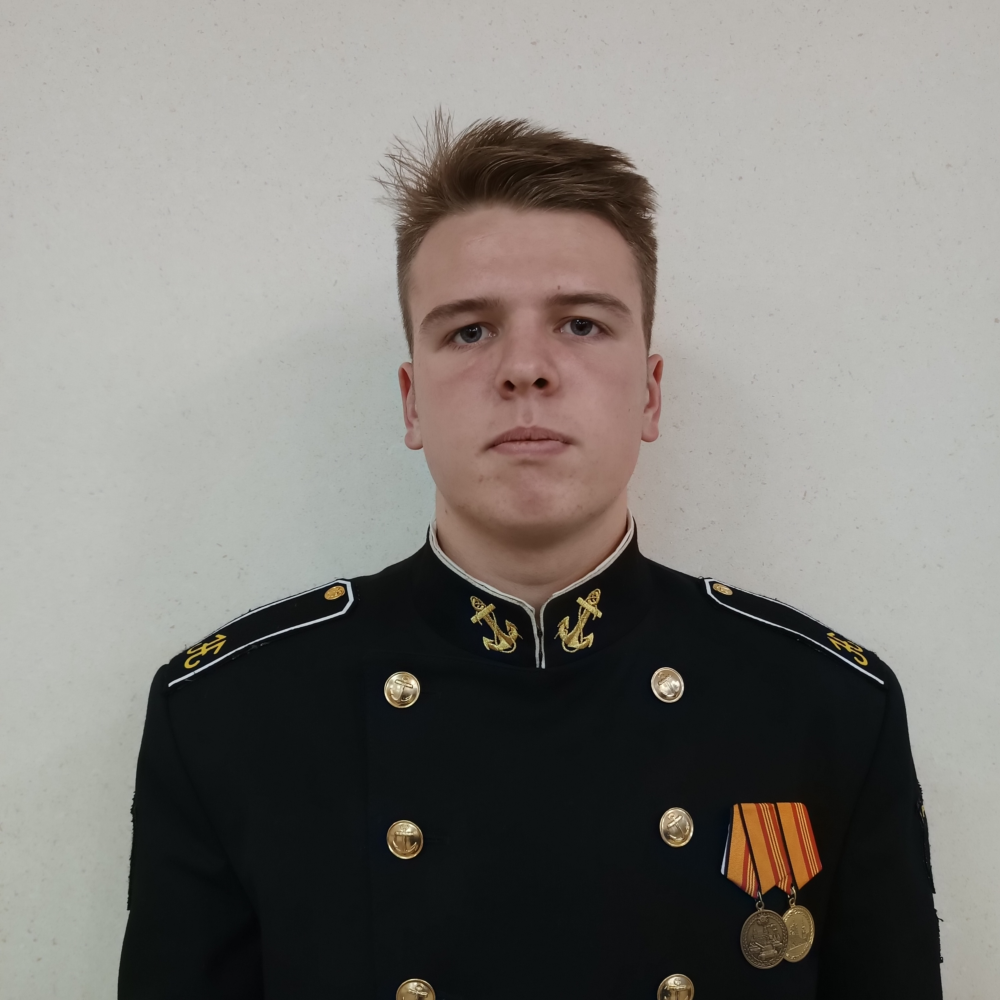

«Сокрушившие врагов символы Победы»

Проект
Информация, полученная в ходе работы над проектом, в первую очередь будет полезна:
молодежи (школьникам, студентам) для формирования нравственных основ личности, интереса к
истории родной страны,
героическому прошлому города Севастополя;
Изучение истории боевых частей, кораблей и подразделений Черноморского флота, освобождавших
Севастополь от
немецко-фашистских захватчиков. Поиск родственников защитников города, проживающих в
Севастополе.
3. Разыскать проживающих в Севастополе родственников ветеранов, служивших в указанных боевых
частях и на кораблях (при
наличии) и наладить оказание им шефской помощи (при необходимости).
4. Организовать взаимодействие с боевым подразделением имени 383-й Шахтерской дивизии на
Донбассе (отправка писем,
поздравления с праздниками).
Использование в работе возможностей виртуального общения с помощью социальных сетей,
использования электронных площадок
позволит охватить большие слои населения, включая тех, кто проживает за рубежом. Таким образом
мы рассчитываем
существенно расширить географию нашего общения и повысить эффективность поисковой и
информационной работы.
Части и корабли
Команда
-
Агапов Платон Дмитриевич
(Сбор информации о боевых часятх, кораблях, потомках ветеранов)
-
Гончаренко Данил Артемович
(Оформление экспозиции выставки в Доме офицеров флота)
-
Затуржинский Михаил Анатольевич
(Обработка результатов исследования, создание и моделирование сайта)
-
Шутов Даниил Валентинович
(Организация взаимодействия с общественными организациями и представителями Черноморского флота, участниками СВО)



Рекомендации:
-
Севастополь. Вторая оборона
Автор: Лубянов Андрей Николаевич
Издательство: Альбатрос, 2019 г.
-
Оборона Севастополя. Полная хроника. 250 дней и
ночей
Автор: Сульдин Андрей Васильевич
Издательство: АСТ, 2019 г.
-
Море в огне
(1970)
Режиссёр: Леон Сааков
Студия: Мосфильм
-
Трое суток
после бессмертия (1963)
Режиссёр: Владимир Довгань
Студия: Киевская киностудия им. А. П. Довженко
-
Следую
своим курсом (1974)
Режиссёр: Вадим Лысенко
Студия: Одесская киностудия
Мероприятия